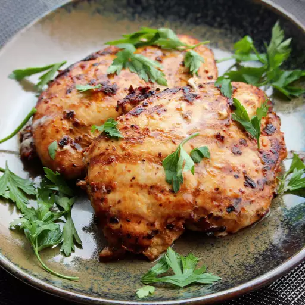

Lasagna

Description
The chipotle chicken recipe doesn't take much effort to make. It is
well mixed and used with chicken for tacos, burriots, bowls, or fajitas.
The chicken is sweet and chewy to the taste and a great choice for a healthy
diet. There are not that many ingredients so this is very friendly for beginners.
ingredients
- 1 ounce dried chipotle chile pepper
- 1 ounce dried ancho chile pepper
- 1/2 cup water
- 1/2 red onion, cut into chunks
- 4 cloves garlic
- 2 teaspoons ground cumin
- 1 teaspoon dried oregano
- 1 teaspoon freshly ground black pepper
- 2 tablespoons olive oil
- 2 1/2 pounds skinless, boneless chicken thighs
Steps
- place chipotle and ancho chile peppers in a shallow bowl; pour
in water. Cover the bowl and let sit at room temperature until
peppers are softened, 10 to 12 hours. Drain water and remove seeds
from peppers.
- Blend chile peppers, red onion, garlic, sea salt, cumin, oregano,
and black pepper in a blender until a coarse paste forms; add olive
oil and blend until marinade is smooth.
- Place chicken thighs between 2 sheets of heavy plastic on a solid, level surface.
Firmly pound chicken with the smooth side of a meat mallet to 1/2-inch thickness.
- Place chicken in a resealable plastic bag and add marinade. Turn chicken several times to coat.
Seal bag and marinate in the refrigerator for at least 8 hours.
- Preheat an indoor grill with top and bottom plates for medium-high heat.
- Remove chicken from the bad and discard marinade
- Place chicken on the preheated grill, close the lid, and cook until
no longer pink in the center and the jucies run clear, 5 to 7 minutes.
An instant-read thermometer inserted into the center should read at least
165 degrees F(74 degrees C). Cut chicken into strips and serve warm.
Return to main page